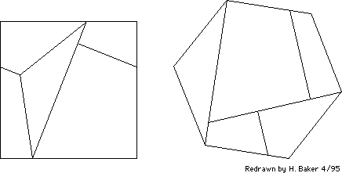

Figure 4. [Problem 85] A surprising square <--> hexagon dissection, adapted from page 164 of the November, 1961 issue of Scientific American, which see for further diagrams and discussion.
[Retyped and formatted in html ('Web browser format) by Henry Baker, April, 1995.]